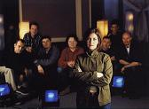

Celtic Lyrics Corner > Artists & Groups > Capercaillie
|  | Capercaillie |
| Members : | Che Beresford, Manus Lunny, Karen Matheson , Michael McGoldrick , Charlie McKerron, David Robertson, Donald Shaw & Ewen Vernal |
| Albums : |
1984 -
Cascade
1987 - Crosswinds 1989 - Sidewaulk 1991 - Delirium 1992 - Get Out 1993 - Secret People 1994 - Cåpèrçaillie 1995 - The Blood Is Strong 1997 - To The Moon 1998 - Glenfinnan (Songs Of The '45) 1998 - Beautiful Wasteland 1998 - Dusk Till Dawn 2000 - Nàdurra 2002 - Live In Concert 2003 - Choice Language 2008 - Roses And Tears |
| Also on : | The Rob Roy soundtrack |